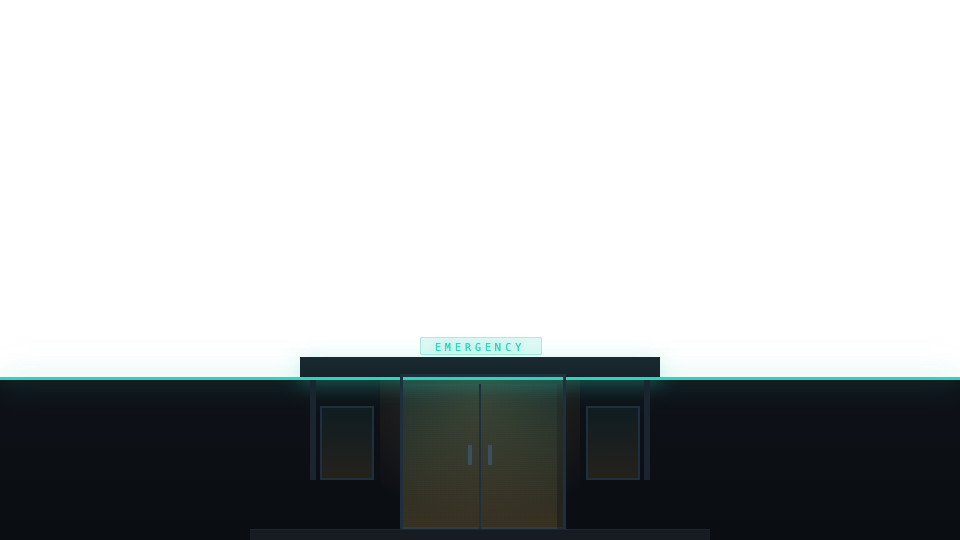
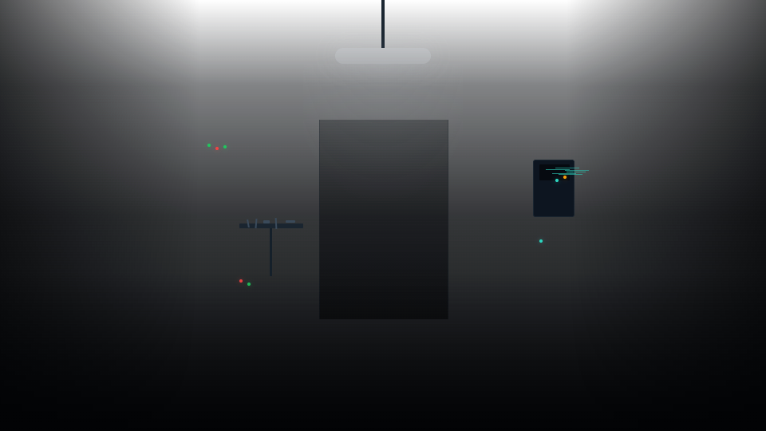

Hospital Parallax Background Layers
All 5 layers stacked (composite view)


Individual layers (checkerboard = transparent areas)
1 - SKY (opaque, furthest back)
2 - BUILDING (transparent bg)
3 - ENTRANCE (transparent bg)
4 - INTERIOR (transparent bg)
5 - DEEP (transparent bg, closest)